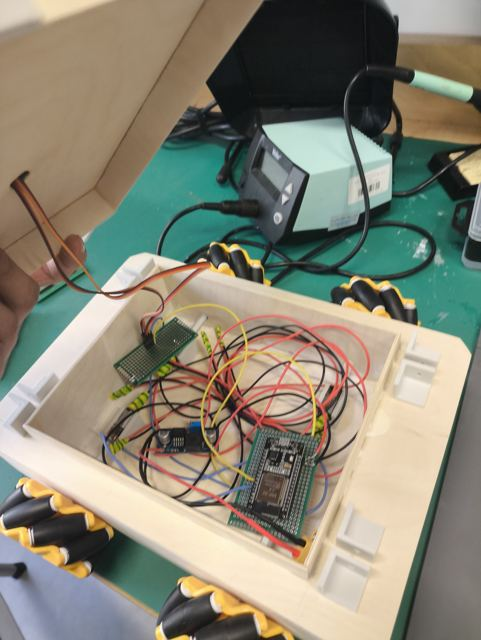
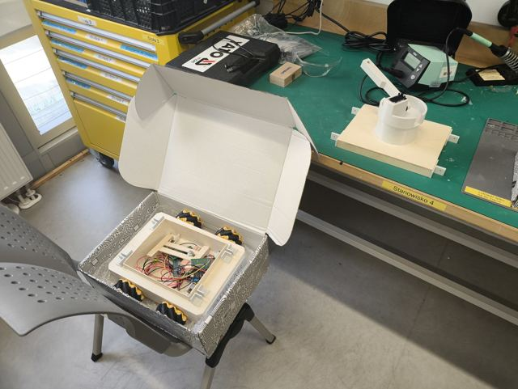
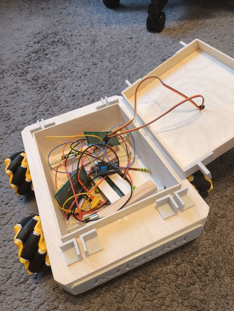

Projects / AUTOCAM
AUTOCAM
A camera robot designed to track a person's face and follow them around. I designed and built it in five days — a plywood chassis with 3D-printed parts, omnidirectional mecanum drive, a rotating turret with a servo-driven arm, and an ESP32 running my own firmware.
- Face tracking
- Mecanum wheels
- Omnidirectional drive
- 3D printing
- ESP32
- Servo
- Prototyping
- When
- September 2025
- Build time
- 5 days
- Materials
- Plywood, printed parts
- Drive
- 4 × mecanum wheels
Goal & outcome
What it was meant to do
An ambitious five-day build: a robot that keeps a person in frame without anyone operating it.
Goal
Detect and track a person's face, then drive after them so the camera keeps them in frame.
Built in 5 days
Complete chassis and mecanum drive, rotating turret with servo arm, ESP32 electronics and firmware.
Next step
Full face tracking and following were not finished within the timeframe — the platform is ready for that layer.
Process
Build log
Click a photo to enlarge.

Wiring the electronics in the workshop — ESP32 microcontroller, power converter and prototype boards. 
Chassis packed for transport, with the turret module on the workbench. 
Assembled robot: mecanum-wheel chassis with the rotating turret and servo arm on top. 
Electronics compartment under the removable top deck.